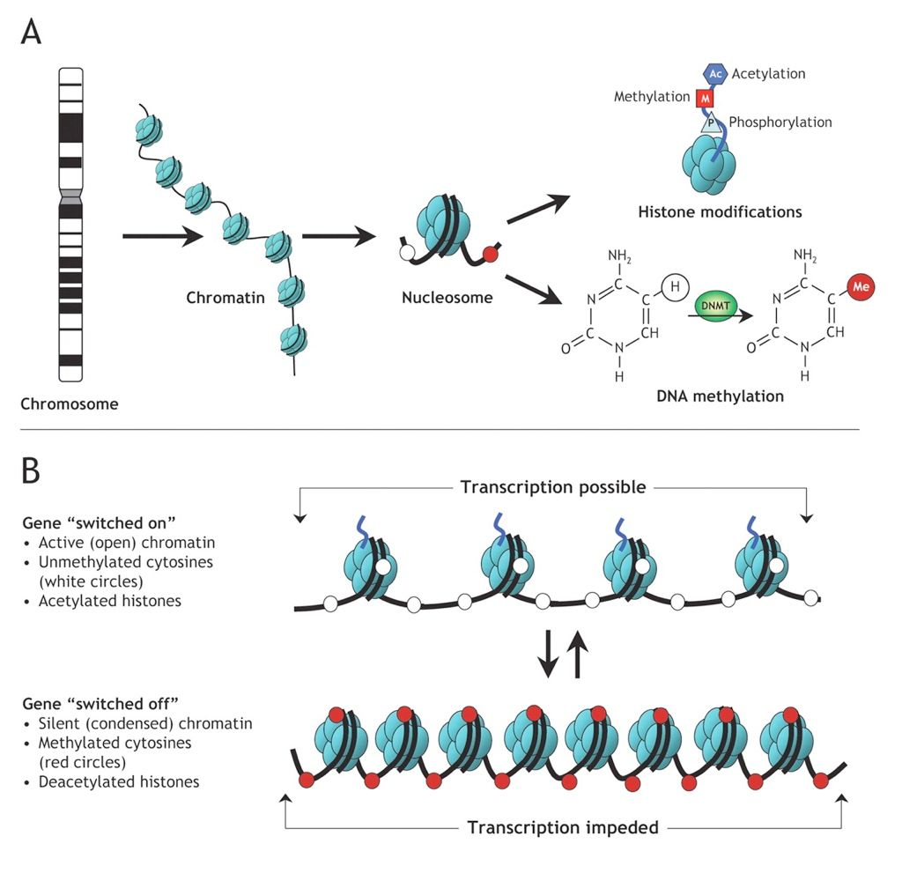

Introduction to DNA Methylation data analysis
Contributors
Authors:  Joachim Wolff
Joachim Wolff
 Yvan Le Bras
Yvan Le Bras
last_modification Published: Jan 1, 1970
last_modification Last Updated: Mar 6, 2024
DNA Methylation data analysis
–
##Bisulfite sequencing QC and processing in Galaxy
#Biological background
.image-75[]
#Methylation: What is it good for?
- Suppression of repeats
- Gene expression
- Imprinting
- X-chromosome inactivation
- Chromosome stability
- Development
- Changes in cancer
- Changes with age
#Heritable methylation
.image-50[]
.image-25[ ]
]
Weaver et al. Nature Neurosci 2004; 7: 847-854
#More than 5-mC
.image-75[ ]
]
Mariani et al. (2013) Cancers
Hands-on
##Step number 1: load data and run FastQC
Bisulfite sequencing
.image-75[]
Mapping a bisulfite sequence read
.image-75[]
Krueger et al.
For the morbidly curious
####For SE datasets or read number 1 in PE:
- C→T converted read: OT or OB (original strand)
- G→A converted read: CTOT or CTOB (complementary strand)
- C→T converted genome: OT or CTOB (top physical strand)
- G→A converted genome: OB or CTOB (bottom physical strand)
Hands-on
##Step number 2: Alignment and methylation bias
#Methylation bias .image-75[]
#Methylation extraction
track type="bedGraph" description="SRR1182519.sorted CpG Methylation levels"
1 25114 25115 100 2 1
1 25115 25116 100 3 1
track type="bedGraph" description="SRR1182519.sorted merged CpG Methylation levels"
1 25114 25116 100 5 1
Hands-on
##Step number 3: Visualization and more
#Thanks for your attention!
Thank you!
This material is the result of a collaborative work. Thanks to the Galaxy Training Network and all the contributors! Tutorial Content is licensed under
Creative Commons Attribution 4.0 International License.
Tutorial Content is licensed under
Creative Commons Attribution 4.0 International License.